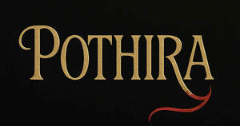

Trade Mark Journal No.2025/037 12 September 2025
UK00004256966 30 August 2025 (41,43)

- Class 41
- Entertainment services; Nightclub services [entertainment]; Entertainment information; Information (Entertainment -); Booking of entertainment; Entertainment services in the nature of arranging social entertainment events; Corporate entertainment services; Live entertainment services; Popular entertainment services; Hospitality services (entertainment); Entertainment services in the nature of organizing social entertainment events; Corporate hospitality (entertainment); Club services [entertainment]; Entertainment club services; Club entertainment services; Provision of entertainment; Television and radio entertainment services; Production of live entertainment; Organising of entertainment; Television and radio entertainment; Radio and television entertainment; Radio entertainment production; Online entertainment services; Services for the production of entertainment in the form of television; Live entertainment production services; Production of television entertainment features; Online interactive entertainment; Arranging of musical entertainment; Entertainment booking services; Production of audio entertainment; Provision of live entertainment; Hosting of entertainment events; Entertainment information services; Rental of entertainment halls; Booking of entertainment halls; Production of live entertainment events; Arranging of visual entertainment; Live demonstrations for entertainment; Social club services for entertainment purposes; Providing facilities for entertainment; Night club services [entertainment]; Arranging of competitions for education or entertainment; Fan club services (entertainment); Arranging of festivals for entertainment purposes; Entertainment services in the nature of contests; Arranging of visual and musical entertainment; Entertainment in the nature of dance performances; Organization of entertainment competitions; Arranging of entertainment shows; Organization of entertainment events; Provision of entertainment services through the media of television; Production of live entertainment features; Conducting of entertainment events; Organization of competitions [education or entertainment]; Competitions (Organization of -) [education or entertainment]; Organization of competitions for education or entertainment; Organisation of entertainment services; Presentation of live entertainment events; Entertainment services for producing live shows; Providing entertainment information; Entertainment services in the nature of a wrestling club; Festivals (Organisation of -) for entertainment purposes; Organisation of outings for entertainment; Multimedia entertainment software publishing services.
- Class 43
- Buildings [Rental of transportable -]; Hospitality services [accommodation]; Hospitality services [food and drink]; Providing temporary accommodation as part of hospitality packages; Catering for the provision of food and beverages; Providing food and drink catering services for fair and exhibition facilities; Catering services for the provision of food and drink; Providing food and drink for guests; Catering of food and drinks; Catering for the provision of food and drink; Food and drink catering; Catering of food and drink; Catering (Food and drink -); Catering services for the provision of food; Providing temporary lodging for guests; Business catering services; Serving food and drink for guests; Services for the preparation of food and drink; Food and drink preparation services; Providing food and beverages; Arranging hotel accommodation; Accommodation services; Booking agency services for hotel accommodation; Club services for the provision of food and drink; Accommodation reservation services; Reservation services for accommodation; Booking services for holiday accommodation; Providing guesthouse services; Services for the provision of food and drink; Services for providing food; Food preparation services; Catering services; Self-service restaurant services; Provision of food and beverages; Take-away food and drink services; Catering; Reception services for temporary accommodation [management of arrivals and departures]; Reservation of tourist accommodation; Providing exhibition facilities in hotels; Preparation of food and beverages.
Natalie Meheut
Timothy Hewitt